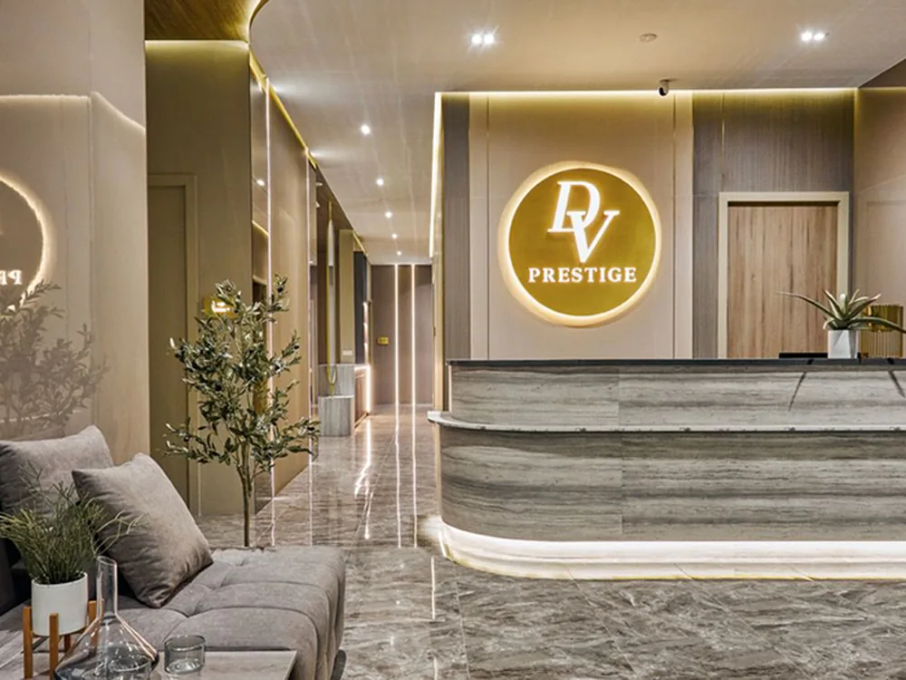
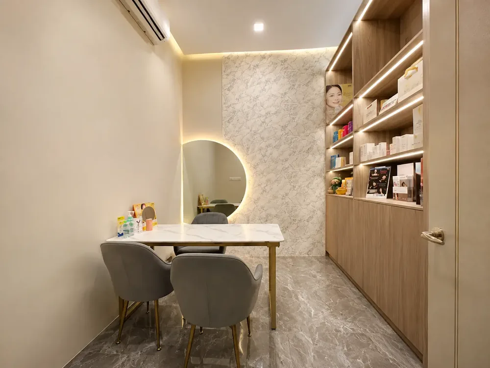
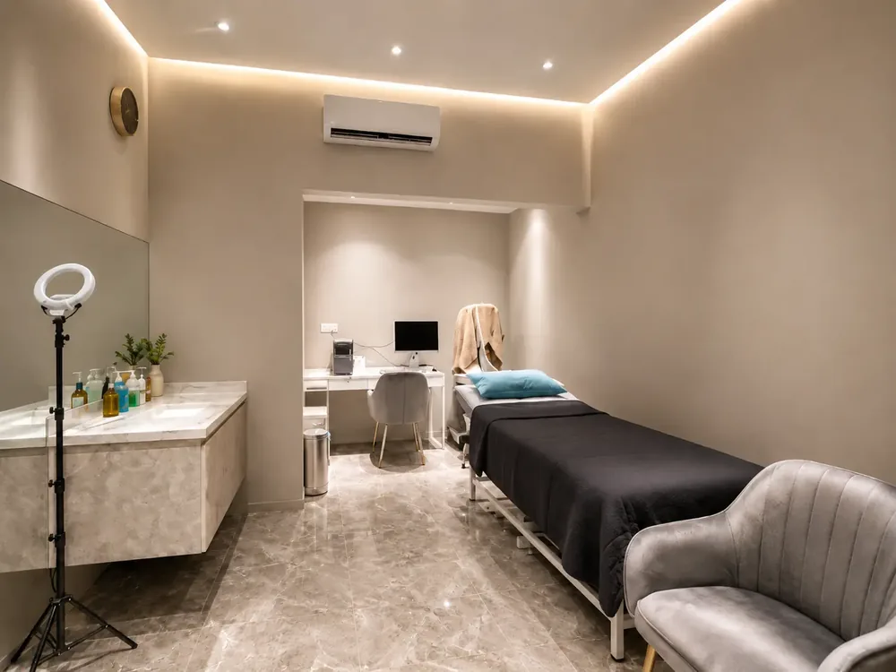
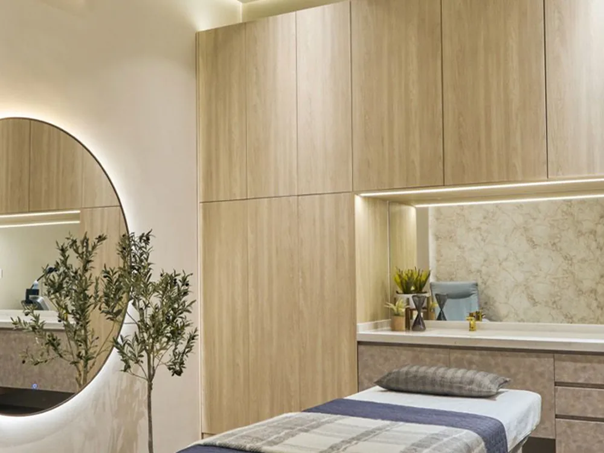

Steps from Pavilion Bukit Jalil at Bukit Jalil Signatures Shop Office, with parking right outside. Personally led by Clinical Director Dr. Wong Yeut Sun with Dr. Tang Yee Li.

Our clinics
Bukit Jalil
Mon–Fri 10am–7pm · Sat–Sun 10am–5.30pm
Visit
Visit Da Vinci Clinic Bukit Jalil (DV Prestige)
Address
Bukit Jalil Signatures Shop Office B-2-1 & B-3-1, Pusat Perdagangan Bandar Bukit Jalil, Persiaran Jalil 7, 57000 Kuala Lumpur
Opening hours
Monday to Friday 10:00am to 7:00pm
Saturday and Sunday 10:00am to 5:30pm
Call or WhatsApp
Landline +603-9776 6886
WhatsApp +6016-938 2689
Doctors at this branch
Dr. Wong Yeut Sun, Dr. Tang Yee Li
4.9★ on Google from 199 reviews for this branch.
Take a look inside
Clinic environment
A calm, private space designed around the consultation.

Consultation room

Skin analysis room

Treatment room
Doctors at Bukit Jalil
Tap a doctor to read their credentials.
What our patients say about us
Candy Law · Google review, Mid Valley“I love Da Vinci clinic. Beside the friendly environment, the most important is they have many different types of pico laser with FDA approved. So far price is good. Dr very experienced!”
faiz C · Google review, Mid Valley“Dr Tan listens to his patients and recommends what’s best for them, and the staff are all very friendly. Thank you!”
Janet Quah · Google review, Mid Valley“I have done 3 procedures at Da Vinci over the last few years and I’m very happy with the results. The doctors are very professional, highly skilled, caring and very people-oriented.”
Joyce Chong · Google review, Mid Valley“Dr. Tan took the time to address all of my concerns and answer my questions, making me feel confident in the treatment. The level of care and expertise surpassed my expectations.”
1 of 4
Real Google reviews from patients of our Mid Valley clinic, quoted as written.
Questions
Questions about the Bukit Jalil clinic
Yes, right outside the shop office.
Dr. Wong Yeut Sun, Clinical Director, and Dr. Tang Yee Li.
The trade name of the Bukit Jalil branch on Google and signage.
WhatsApp +6016-938 2689 or call +603-9776 6886.

Mastering the art of science
Book at Bukit Jalil
WhatsApp +6016-938 2689 or use the form. Open seven days a week.
Book a consultation